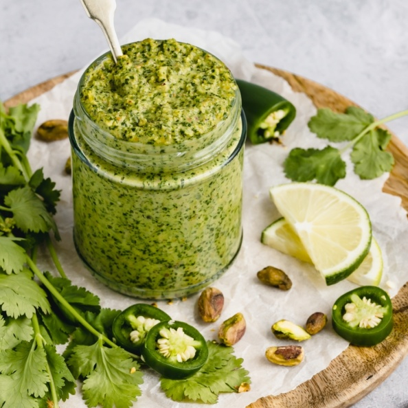

Curry

Description
The most amazing german styled Lentil Soup with bacon and good quality sausages.
Ingredients
- lentils
- potatoes
- leek
- carrots
- onions
- saussages
- bacon
- garlic
- pinch of salt
Steps
- First chop the potatoes into bite size pieces. Onions, leek and carrots should also be chopped but in smaller sizes as they will be the base of the soup.
- Heat up a large pot with a drizzle of sunflower oil and meanwhile dice the bacon into 0.5cm sizes. Once the oil is hot, put in the bacon and fry it until before it is cripsy. Then add in the onions, carrots, leek and garlic. Let the ingredients cook for about 4 minutes.
- Once the vegetanles look slighlty cooked, add the lentils, potatoes and enough water. The water shoould cover the lentils. About 1 third more of the volumen of the lentils.
- While the vegetables and lentils cook in the water, slice the sausages and fry them in a separate pan.
- After 3 hours of slow cooking, add the sausages into the lentil soup and let it cook for 1 more hour.
You could additionaly add some salt and pepper, but depending on the bacon and sausages, this might not be necessary.